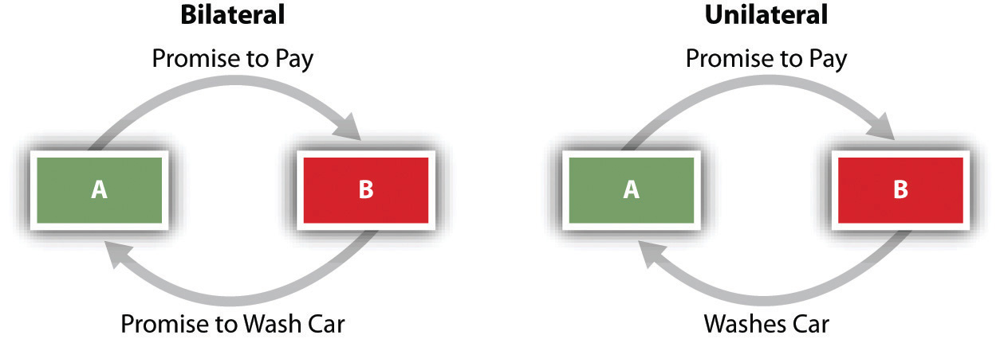

Some contracts are written, some oral; some are explicit, some not. Because contracts can be formed, expressed, and enforced in a variety of ways, a taxonomy of contracts has developed that is useful in grouping together like legal consequences. In general, contracts are classified along four different dimensions: explicitness, mutuality, enforceability, and degree of completion. Explicitness is the degree to which the agreement is manifest to those not party to it. Mutuality takes into account whether promises are given by two parties or only one. Enforceability is the degree to which a given contract is binding. Completion considers whether the contract is yet to be performed or whether the obligations have been fully discharged by one or both parties. We will examine each of these concepts in turn.
An express contractA contract in words, orally or in writing. is one in which the terms are spelled out directly. The parties to an express contract, whether it is written or oral, are conscious that they are making an enforceable agreement. For example, an agreement to purchase your neighbor’s car for $5,500 and to take title next Monday is an express contract.
An implied contractA contract that is not expressed but is inferred from the actions of the parties. is one that is inferred from the actions of the parties. When parties have not discussed terms, an implied contract exists if it is clear from the conduct of both parties that they intended there be one. A delicatessen patron who asks for a turkey sandwich to go has made a contract and is obligated to pay when the sandwich is made. By ordering the food, the patron is implicitly agreeing to the price, whether posted or not.
The distinction between express and implied contracts has received a degree of notoriety in the so-called palimony cases, in which one member of an unmarried couple seeks a division of property after a long-standing live-together relationship has broken up. When a married couple divorces, their legal marriage contract is dissolved, and financial rights and obligations are spelled out in a huge body of domestic relations statutes and judicial decisions. No such laws exist for unmarried couples. However, about one-third of the states recognize common-law marriage, under which two people are deemed to be married if they live together with the intent to be married, regardless of their failure to have obtained a license or gone through a ceremony. Although there is no actual contract of marriage (no license), their behavior implies that the parties intended to be treated as if they were married.
A quasi-contract (implied in law)A contract imposed on a party when there was none, to avoid unjust enrichment. is—unlike both express and implied contracts, which embody an actual agreement of the parties—an obligation said to be “imposed by law” in order to avoid unjust enrichment of one person at the expense of another. A quasi-contract is not a contract at all; it is a fiction that the courts created to prevent injustice. Suppose, for example, that the local lumberyard mistakenly delivers a load of lumber to your house, where you are repairing your deck. It was a neighbor on the next block who ordered the lumber, but you are happy to accept the load for free; since you never talked to the lumberyard, you figure you need not pay the bill. Although it is true there is no contract, the law implies a contract for the value of the material: of course you will have to pay for what you got and took. The existence of this implied contract does not depend on the intention of the parties.
The typical contract is one in which the parties make mutual promises. Each is both promisor and promisee; that is, each pledges to do something, and each is the recipient of such a pledge. This type of contract is called a bilateral contractA contract in which each party makes a promise to the other..
Mutual promises are not necessary to constitute a contract. Unilateral contractsA contract that is accepted by performance of the requested action, not by a promise., in which one party performs an act in exchange for the other party’s promise, are equally valid. An offer of a reward—for catching a criminal or for returning a lost cat—is an example of a unilateral contract: there is an offer on one side, and the other side accepts by taking the action requested.
Figure 8.2 Bilateral and Unilateral Contracts
Not every agreement between two people is a binding contract. An agreement that is lacking one of the legal elements of a contract is said to be a void contractAn agreement that never was a contract.—that is, not a contract at all. An agreement that is illegal—for example, a promise to commit a crime in return for a money payment—is void. Neither party to a void “contract” may enforce it.
By contrast, a voidable contractA contract that is capable of being annulled. is one that may become unenforceable by one party but can be enforced by the other. For example, a minor (any person under eighteen, in most states) may “avoid” a contract with an adult; the adult may not enforce the contract against the minor if the minor refuses to carry out the bargain. But the adult has no choice if the minor wishes the contract to be performed. (A contract may be voidable by both parties if both are minors.)
Ordinarily, the parties to a voidable contract are entitled to be restored to their original condition. Suppose you agree to buy your seventeen-year-old neighbor’s car. He delivers it to you in exchange for your agreement to pay him next week. He has the legal right to terminate the deal and recover the car, in which case you will of course have no obligation to pay him. If you have already paid him, he still may legally demand a return to the status quo ante (previous state of affairs). You must return the car to him; he must return the cash to you.
A voidable contract remains a valid contract until it is voided. Thus a contract with a minor remains in force unless the minor decides he or she does not wish to be bound by it. When the minor reaches majority, he or she may “ratify” the contract—that is, agree to be bound by it—in which case the contract will no longer be voidable and will thereafter be fully enforceable.
An unenforceable contractA contract for which the nonbreaching party has no remedy for its breach. is one that some rule of law bars a court from enforcing. For example, Tom owes Pete money, but Pete has waited too long to collect it and the statute of limitations has run out. The contract for repayment is unenforceable and Pete is out of luck, unless Tom makes a new promise to pay or actually pays part of the debt. (However, if Pete is holding collateral as security for the debt, he is entitled to keep it; not all rights are extinguished because a contract is unenforceable.) A debt becomes unenforceable, too, when the debtor declares bankruptcy.
A bit more on enforceability is in order. A promise or what seems to be a promise is usually enforceable only if it is otherwise embedded in the elements necessary to make that promise a contract. Those elements are mutual assent, real assent, consideration, capacity, and legality. Sometimes, though, people say things that seem like promises, and on which another person relies. In the early twentieth century, courts began, in some circumstances, to recognize that insisting on the existence of the traditional elements of contract to determine whether a promise is enforceable could work an injustice where there has been reliance. Thus developed the equitable doctrine of promissory estoppelTo be prohibited from denying a promise when another subsequently has relied on it., which has become an important adjunct to contract law. The Restatement (Section 90) puts it this way: “A promise which the promisor should reasonably expect to induce action or forbearance on the party of the promisee or a third person and which does induce such action or forbearance is binding if injustice can be avoided only by enforcement of the promise. The remedy granted for breach may be limited as justice requires.”
To be “estopped” means to be prohibited from denying now the validity of a promise you made before.
The doctrine has an interesting background. In 1937, High Trees House Ltd. (a British corporation) leased a block of London apartments from Central London Properties. As World War II approached, vacancy rates soared because people left the city. In 1940 the parties agreed to reduce the rent rates by half, but no term was set for how long the reduction would last. By mid-1945, as the war was ending, occupancy was again full, and Central London sued for the full rental rates from June on. The English court, under Judge Alfred Thompson Denning (1899–1999), had no difficulty finding that High Trees owed the full amount once full occupancy was again achieved, but Judge Denning went on. In an aside (called a dicta—a statement “by the way”—that is, not necessary as part of the decision), he mused about what would have happened if in 1945 Central London had sued for the full-occupancy rate back to 1940. Technically, the 1940 amendment to the 1937 contract was not binding on Central London—it lacked consideration—and Central London could have reached back to demand full-rate payment. But Judge Denning said that High Trees would certainly have relied on Central London’s promise that a reduced-rate rent would be acceptable, and that would have been enough to bind it, to prevent it from acting inconsistently with the promise. He wrote, “The courts have not gone so far as to give a cause of action in damages for the breach of such a promise, but they have refused to allow the party making it to act inconsistently with it.”Central London Property Trust Ltd. v. High Trees House Ltd. (1947) KB 130.
In the years since, though, courts have gone so far as to give a cause of action in damages for various noncontract promises. Contract protects agreements; promissory estoppel protects reliance, and that’s a significant difference. The law of contracts continues to evolve.
An agreement consisting of a set of promises is called an executory contractA contract that has yet to be completed. before any promises are carried out. Most executory contracts are enforceable. If John makes an agreement to deliver wheat to Humphrey and does so, the contract is called a partially executed contractA contract in which one party has performed, or partly performed, and the other party has not.: one side has performed, the other has not. When John pays for the wheat, the contract is fully performed. A contract that has been carried out fully by both parties is called an executed contractA contract that has been completed..
Although not really part of the taxonomy of contracts (i.e., the orderly classification of the subject), an aspect of contractual—indeed, legal—terminology should be highlighted here. Suffixes (the end syllables of words) in the English language are used to express relationships between parties in legal terminology. Here are examples:
Contracts are described and thus defined on the basis of four criteria: explicitness (express, implied, or quasi-contracts), mutuality (bilateral or unilateral), enforceability (void, voidable, unenforceable), and degree of completion (executory, partially executed, executed). Legal terminology in English often describes relationships between parties by the use of suffixes, to which the eye and ear must pay attention.